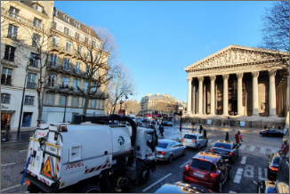
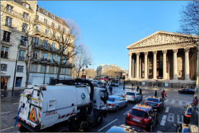

|
프랑스 파리 | 영화 미드나잇 인 배경 파리 팡테옹 국립묘지 거리 | |
|---|---|---|---|
| 유럽여행 | 팡테옹 국립묘지 | 여행추천 | AUX GRANDS HOMMES LA PATRIE RECONNAISSANTE위대한 자들에게 조국이 감사를 표하다 팡테옹은 원래 루이 15세가 자신의 병이 치유된 것을 신에게 감사하기 위하여 생트 준비에브(Saint Jenevieve) 교회로 지었으나 뒤에 나라에 공헌한 위인들이 묻히는 국립묘지 팡테옹(Pantheon)으로 바꾸어 사용한 곳이다. |
| 여행시간 | 2시간 | 여행일자 | 2020. 01. 03 |
팡테옹에는 유명한 인물들은 철학자인 볼테르, 루소, 과학자 퀴리 부부, 작가인 빅토르 위고, 에밀 졸라, 알렉상드르 뒤마 퀴리 부부 등의 무덤이 있다.
 
